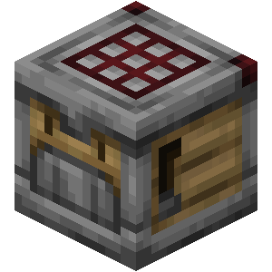
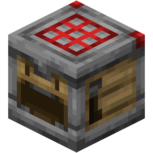
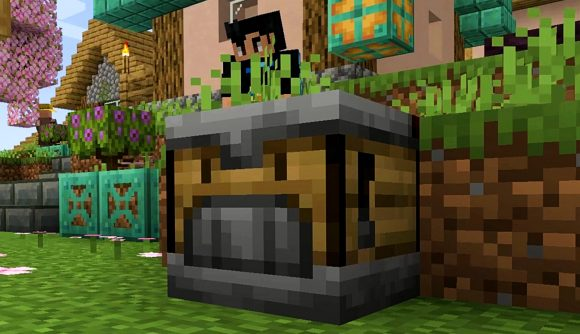
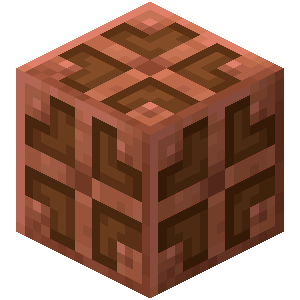
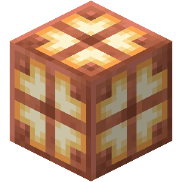
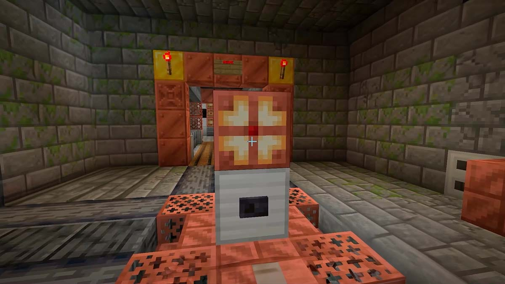

Sprawdź aktualizacje

CRAFTER

Crafter - blok użytkowy dodany w aktualizacji 1.21 służący do automatycznego wytwarzania przedmiotów po otrzymaniu sygnału redstone.
Kiedy wytwarzacz odbiera sygnał redstone, czeka 4 ticki (0,2 sekundy), zanim wyrzuci jeden wyprodukowany przedmiot, wykorzystując składniki ze swoich slotów. Wyprodukowane przedmioty są następnie wyrzucane z przodu wytwarzacza. Jeśli przód wytwarzacza jest skierowany w stronę pojemnika (w tym innego wytwarzacza), wyprodukowane przedmioty są przenoszone do tego pojemnika. Jeśli pojemnik, do którego jest skierowany, jest pełny lub przedmiotu nie można włożyć do niego, wytwarzacz wyrzuca przedmiot. Jeśli receptura zawiera produkty uboczne (np. puste butelki dla bloków miodu lub puste wiadra dla ciasta), są one wyrzucane po wytworzonym przedmiocie.
Lej umieszczony pod wytwarzaczem zbiera składniki z pola wytwarzania, a nie wytworzony przedmiot.
W Java Edition, w przeciwieństwie do dozowników i podajników, wytwarzacze nie podlegają wpływowi quasi-connectivity.


MIEDZIANA LAMPA

Miedziana lampa jest blokiem dadanym w aktualizacji 1.21 emitującym światło.
Zapala się lub gaśnie gdy otrzyma sygnał redstone, nie potrzebuje ona ciągłego zasilania aby świecić. Poziom emitowanego światła zależy od poziomu utlenienia (tabela w rozdziale "Zastosowanie"). Woskowana miedziana lampa działa tak samo, ale nie ulega procesowi utleniania.

Miedziana lampa ma 4 poziomy utlenienia:
- domyślny nieutleniony,
- „zwietrzały”
- „zaśniedziały”
- „utleniony”